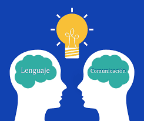
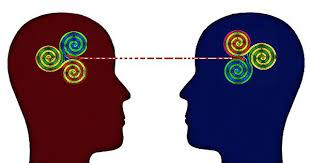
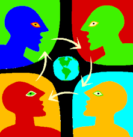

La Lengua y Comunicación es una materia importante porque nos ayuda a entender cómo nos expresamos y cómo influye en nuestras interacciones sociales. Es un tema que me interesa mucho porque es fundamental para poder comunicar ideas de manera clara.
Nombre: Rogelio Aranda Garcia
Grupo: 201
La lengua es esencial para la comunicación, ya que nos permite transmitir ideas y pensamientos de manera efectiva.
Existen diferentes tipos de comunicación como verbal, no verbal y escrita. Cada uno tiene su propósito y contexto.
La tecnología ha cambiado la forma en que nos comunicamos, permitiendo interacciones más rápidas y a distancia.
| Tipo de Comunicación | Descripción |
|---|---|
| Verbal | Comunicación mediante palabras habladas |
| No Verbal | Comunicación mediante gestos, posturas y expresiones |
| Escrita | Comunicación a través de la escritura |